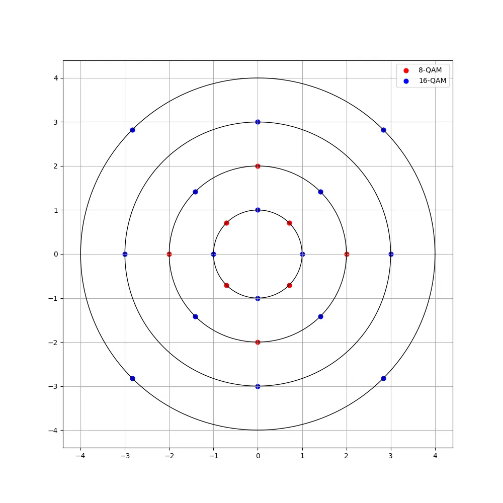
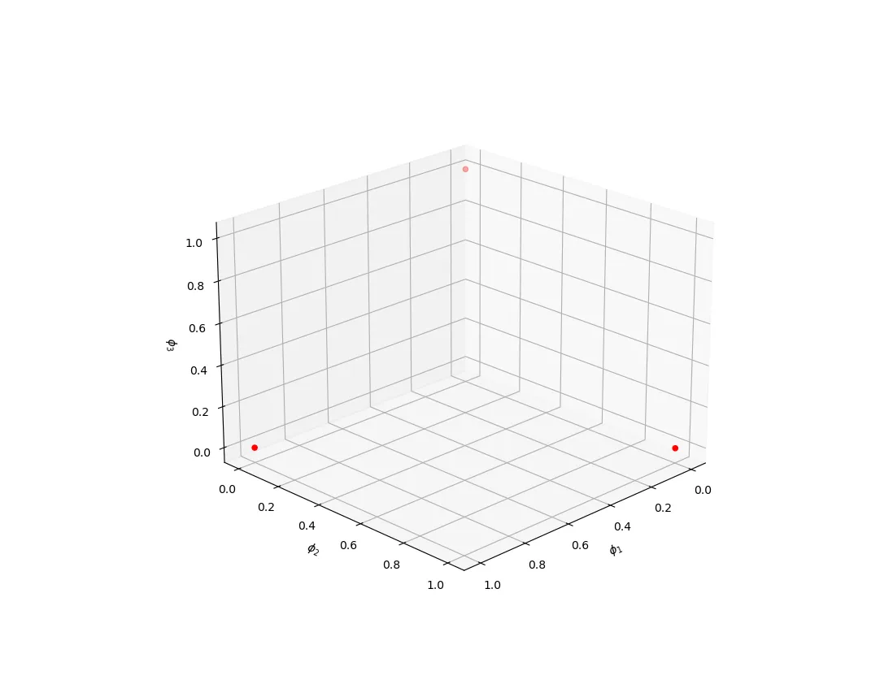
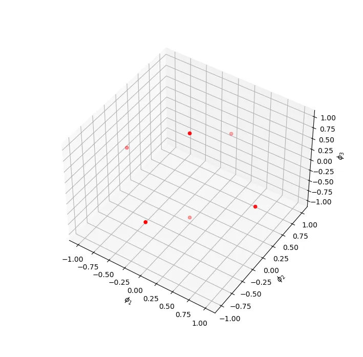

数字调制实际上就是调制器将kbit 符号映射成相应的信号波形集sm(t)，1≤m≤M,M=2k。
也就是现在有一堆信号波形，然后一个选择器会根据你输入的数据也就是待调制的信号，从这一堆波形里面挑一个出来，塞进信道里，这个也就是数字调制了。
然后一个基本的分类也就是根据是否有记忆来区分，分为有记忆调制和无记忆调制。如果调制的结果仅取决于当前输入的数据，那么这个就是无记忆调制，否则就是有记忆调制，这些很好理解。
# 基本概念
先引入一些基本的符号定义：对于一个信号波形，其持续时间Ts 或者T，其倒数也就是信号的传输速率Rs=T1。
如果我们考虑一个信号波形承载若干个 bit 的信息，那么有 bit 持续时间Tb=log2MTs 和 bit 传输速率Rb=Tb1=Rslog2M 的概念。这很好理解，但是需要注意，这两个只是一个等效的概念，bit 持续时间为Tb 并不意味着这段时间内正在传输某个 bit。
对于M 个信号波形，如果都是等概率的，就可以计算出信号的平均能量（平均功率也能够表示出来）：
Eavg=M1m=1∑M∫0Ts∣sm(t)∣2dt(1.1)
同样的，可以引申出平均 bit 能量的概念（这也是一个等效的概念）：
Ebavg=log2MEavg
# 脉冲幅度调制 PAM
一个最基本的调制方式也就是脉冲幅度调制（Pulse Amplitude Modulation），也就是所谓的 PAM。
PAM 的信号表示如下：
sm(t)=Re{Amg(t)ej2πfct}=Amg(t)cos(2πfct),t∈[0,Ts)Am=(2m−1−M)d, m=1,2,...,M(2.1)
这里的g(t) 叫做 pulse shaping function，决定了信号的形状。而Ts 一般需要是载波周期fc1 的整倍数，这是为了在积分上的便利性。如果信号的Ts 不是载波周期的整数倍的话，那对它积分的话就无法利用整周期的一些性质了，同时积分也会出现各种复杂的问题，这是我们不希望发生的。不过对于高频的载波信号，实际上差的那一部分影响几乎可以忽略不计了，因此可以不考虑这些。
上面的这一段公式也就是把输入的信号转换成了载波的幅度。比如说对于M=4 的情况，就是下面这样：
s1(t)s2(t)s3(t)s4(t)=−3g(t)cos(2πfct)=−g(t)cos(2πfct)=+g(t)cos(2πfct)=+3g(t)cos(2πfct)
# M-PAM 的 Gram-Schmidt 过程
以前提到将信号转换成波形空间中的向量表示是一个方便的办法，这里也就是要这么做。PAM 信号很明显是一个一维的信号，我们只需要一个基底就可以对其进行表示。
那么我们将式(2.1) 的形式进行归一化，将函数除以自己的范数，得到：
ϕ1(t)=∣∣g(t)∣∣g(t)2cos(2πfct)=Egg(t)2cos(2πfct)(2.2)
注意到∣∣cos(2πfct)∣∣cos(2πfct)=cos(2πfct)⋅2。
对吗？不对。
我们需要将上面的函数归一化，对于f(t)=f1(t)f2(t)，有：
∣∣f(t)∣∣f(t)=∣∣f1(t)f2(t)∣∣f1(t)f2(t)=∣∣f1(t)∣∣⋅∣∣f2(t)∣∣f1(t)f2(t)
这意味着从数学上，上面的推导是错的。挺麻烦。不过来看(2.2) 的形式：
∣∣ϕ1(t)∣∣2===∣∣g(t)∣∣22∫0Tsg2(t)cos2(2πfct)dt∣∣g(t)∣∣22∫0Tsg2(t)21+cos(4πfct)dt∣∣g(t)∣∣21∫0Tsg2(t)dt+∣∣g(t)∣∣21∫0Tsg2(t)cos(4πfct)dt
这个时候，对于一个长得差不多的g(t) 来说，如果载波的fc 足够大的话，蓝色的积分结果应该是几乎接近于 0 的。当然如果g(t) 是一个常数或者之类长得和载波比较般配的函数，Ts 也是fc1 的倍数，那蓝色部分的积分是直接等于 0。
那这个部分可以进行一个小小的近似：
∣∣ϕ1(t)∣∣2=≈∣∣g(t)∣∣21∫0Tsg2(t)dt+∣∣g(t)∣∣21∫0Tsg2(t)cos(4πfct)dt∣∣g(t)∣∣21∫0Tsg2(t)dt=1
好的，这样就可以了。那么我们近似的推出了(2.2)，其实可以看到，这条算式的结果是把包含了g(t) 的部分独立了出来，这一个部分就可以作为一个模块独立于调制cos(2πfct) 存在，譬如使用方波或者 RRC，这些选择都不影响。这更类似于一个工程上的解耦。
这样子，我们可以把一个 PAM 符号表示为
sm=[2Am⋅∣∣g(t)∣∣](2.3)
这是一个一维向量。在此基础上不难得到信号的能量：
Em=∫0Ts∣sm(t)∣2dt≈2Am2∣∣g(t)∣∣2=21Am2Eg(2.4)
# 误码率的考量与格雷编码
在信息传输的过程中，出现错误的话，难免会对传输产生影响。而这个过程差不多可以这样子理解：
干扰⟶错误符号⟶错误比特
在这一部分我们其实不是太好去控制哪个符号错误是否发生，这个问题应该说是难以避免的。不过我们确实可以做到把错误的符号导致的错误比特数降到尽可能低。
对于 PAM 信号，两个符号之间的欧氏距离很容易得到：
∣∣sm(t)−sn(t)∣∣≈∣2Am∣∣g(t)∣∣−2An∣∣g(t)∣∣∣=d2⋅∣∣g(t)∣∣⋅∣m−n∣
那么最近间距的两个点就是相邻的点，比如说 - 1 和 1，-3 和 1 这样子的，如果发生错误也最有可能就是相邻符号之间的跳变。这个从直观上也很好理解。
那么我们就是需要去使得 * 如果发生了相邻符号之间的变化，由此导致的比特改变最少。* 如果学过数电的话，那么这个问题就很好解决了，我们可以使用格雷编码。
格雷编码可以保证相邻的两个编码之间只有一个比特的差别，例如四个点可以分别编号为 00/01/11/10。下面给了个简单的 DEMO：
PAM DEMO
（当心数据太大了卡爆自己的浏览器）鼠标悬停查看点的格雷编码 K:
挺好玩的，可以多玩玩：)
# 优化 - SSB PAM
我们前面应该知道了，对于一个实信号，因为它的对称性，这个信号所有的信息都包含在了正频率或者负频率中。我们使用这个信号的一半就能够重构出整个原始信号。
那么像 PAM 的这种方式实际上是用了整个输入的实信号g(t)，然而我们实际上只需要用到一半就行。我们可以采用所谓的单边带（Single-Side-Band）的方式来调制：
sm(t)=Re{Am(g(t)±jg^(t))ej2πfct}(2.5)
这里的g^(t) 是g(t) 的 Hilbert 变换。
这里有趣的一点是，如果我们展开式(2.5)，我们得到：
sm(t)==Re{Am(g(t)±jg^(t))ej2πfct}2Amg(t)cos(2πfct)∓2Amg^(t)sin(2πfct)
考虑g+(t)=2g(t)+jg^(t)，我们会发现这个信号还是一个一维信号，不过和 PAM 不同 —— 它处于y=x 或者y=−x 这条轴上了。
# 相位调制 PM / 相移键控 PSK
与 PAM 通过振幅表示信息不同，相位调制（Phase Modulation）通过载波的相位来表示信息：
sm(t)===θm=Re{g(t)ej2π(m−1)/Mej2πfct}g(t)cos(2πfct+θm)cosθm⋅ϕ1g(t)cos2πfct−sinθm⋅ϕ2g(t)sin2πfct2π(m−1)/M(3.1)
和前面 PAM 类似的，我们进行一个差不多的 Gram-Schmidt 过程，能够得到这个信号的两个标准正交基：
⎩⎨⎧ϕ1(t)≈∣∣g(t)∣∣g(t)2cos(2πfct)ϕ2(t)≈∣∣g(t)∣∣g(t)2sin(2πfct)(3.2)
这样子便能够得到信号的表示：
sm=[2∣∣g(t)∣∣cosθm,2∣∣g(t)∣∣sinθm](3.3)
这个也说明了 PSK 是一个二维信号。
# 能量、误码和星座图
我们可以通过计算这个信号的能量来看看它的性能：
Em=∫0Tsm2(t)dt≈2∣∣g(t)∣∣2(cos2θm+sin2θm)=2Eg(3.4)
好玩的一点来了，这个信号的每个符号能量都是一样的，它们到原点的距离相等（实际上应该也就是分布在原点为中心的一个圆上）。
相较于 PAM 能量会随着不同的符号变化而改变，PSK 的能量是固定的，这也许能够用来判断距离等信息。
而计算 PSK 两个点的间距，我们可以得到：
∣∣sm(t)−sn(t)∣∣=∣∣g(t)∣∣1−cos(θm−θn)
这样子最近的两个点也就是相邻的两个点，无论是从公式还是直观上的理解都很容易得到。那么和 PAM 一样，使用格雷编码也是一个合理的选择。
信号的星座图是这样，请自己画吧：
PSK DEMO
# π/4-QPSK
如果稍微调整一下上面 PSK 的相位，有一个非常有趣的情况，也就是 π/4-QPSK，它的星座图如下：(没显示出来就刷新一下)
这相当于正常的 QPSK 旋转了 45 度所在的位置，这带来的好处是，所有坐标点的横纵坐标取值都是±1，对于设计和实现更加方便。
# 正交幅度调制 QAM
前面说了 PAM 是一个一维的信号，而 PSK 是一个二维的信号，但是 PSK 两个维度是紧密相关的，如果我们需要一个更加灵活的传输方式，将两个维度独立开来分别传输信号是一个可行的方案，这也就是正交幅度调制（Quadrature Amplitude Modulation）。利用Ami 和Amq 分别表示两个维度上的信号幅度，QAM 信号可以表示为：
sm(t)=Amiϕ1(t)g(t)cos(2πfct)−Amqϕ2(t)g(t)sin(2πfct)(4.1)
类似的，可以得到一组正交基：
⎩⎨⎧ϕ1(t)≈∣∣g(t)∣∣g(t)2cos(2πfct)ϕ2(t)≈−∣∣g(t)∣∣g(t)2sin(2πfct)(4.2)
QAM 信号可以利用这组正交基表示为：
sm(t)=[2Ami∣∣g(t)∣∣,2Amq∣∣g(t)∣∣]
很明显，相较于原先的一维传输方式，QAM 一次利用了两个维度进行传输，相当于传输 bit 数翻了一倍，这带来了传输速度的极大提升。当然，在实际系统中，这也是一个 trade-off 的过程，更高的传输速率也会带来误码率的提升和系统设计复杂度提升等问题。
# 信号的能量和星座图
QAM 信号的能量计算和 PSK 类似，只是需要将 PSK 中的cos 和sin 替换为Ami 和Amq 即可：
Em=≈==∫0Tsm2(t)dt21∣∣g(t)∣∣2Ami2+21∣∣g(t)∣∣2Amq221∣∣g(t)∣∣2(Ami2+Amq2)21Eg(Ami2+Amq2)
这个也就意味着 QAM 信号的能量是分成了多个能量级别，也就失去了 PSK 的等能量的性质。同时呢，点的距离也不是等距离的了：
∣∣sm(t)−sn(t)∣∣=2Eg∣Ami−Ani∣2+∣Amq−Anq∣2
最近的间距也就是相邻点的间距，随便带入一组数据，可以得到：
m=nmin2Eg∣Ami−Ani∣2+∣Amq−Anq∣2=2Eg
如果计算平均符号能量的话，我们能够得到：
Eavg=M12Egm=1∑Mn=1∑M(Ami2+Amq2)=2MEg32M(M−1)=3M−1Eg
也就是说平均符号能量是和 M-QAM 的 M 成正比。在保证其他一定的情况下，M 越大，相应的平均信号能量就越大，同时，信号的能量级别也越多。这也给传输系统各个组件的设计增加了一定的复杂性。
一个星座图的 DEMO 在下面：
QAM-DEMO
点击图例可以选择关闭或者打开对应的星座图。这里实际上也只是一种映射方式，而星座图上的点到数据的映射更加复杂，甚至可以用来进行数据加密等操作。
# 另一种方式
前面一段是采用了 PAM+PAM 的方式，实际上利用 PAM+PSK 的方式也可以构造出 QAM 来，我们可以写出这样的形式：
sm(t)=Re{Vm1ejθm2g(t)ej2πfct}=Vm1g(t)cos(2πfct+θm2)Vm1=Ami2+Amq2θm2=arctan(Amq/Ami)
这样子的一大优势是平均传送能量更低，因为信号的星座图相较于前面的部分来说更加接近原点。以部分星座图作为例子来看：
echarts 和 chartjs 好像都不太好画圆…… 这里直接拿 Python 画图了吧，交互性没前面那么好……

# 高维信号传输
前面聊了 PAM、PSK、QAM，这些也就是在一维或者二维进行传输的方式。那么就是是否存在更高维度的传输方式？
显然是有的，我们能够构想出有两种方式：切分时间、切分频率。当然我们也可以将二者组合起来。
一方面，我们可以去切分时间，这样子，使得一个时间周期内，可以传输一个若干维度的数据，加上 PAM、PSK 之类的方式，就可以构造出一个高维度的信号。
另一方面，我们可以利用多个频率，每个频率都可以是一个子维度，这样子也可以构造出一个高维度的信号。
当然了，多个维度之间必定是要满足正交的关系的，否则之间会出现相互的影响，这个在后面的构造中我们会有所体会。
那先来看切分频率。
# 频移键控 FSK
频移键控（Frequency Shift Keying）的思想也就是将消息通过不同的频率来进行传输，这个过程中我们会构造出一组带通正交多维信号，不过这个暂且不谈。
FSK 的信号可以表示为：
sm(t)=Re{T2Eej2π(mΔf)tej2πfct}=T2Ecos[2πfct+2π(mΔf)t](5.1)
T2E 用来保证每个信号的能量一定，稍后会看到。
# 正交的条件
这里的Δf 是一个有趣的东西，前面说了，这个各个维度之间应该是正交的，下面来看：
如果我们将(5.1) 这个信号转到基频，我们得到：
sm,1(t)=T2Eej2π(mΔf)t
我们选择两个信号sm,1(t) 和sn,1(t)，m=n，计算它们的内积：
ρmn,1===∣∣sm,1(t)∣∣⋅∣∣sn,1(t)∣∣⟨sm,1(t),sn,1(t)⟩T1∫0Tej2π(m−n)Δftdtsinc[T(m−n)Δf]ejπT(m−n)Δf
正交要求内积为 0，也就是ρmn,x=0，指数部分不谈，看前面的部分，我们知道：
sinc(x)=πxsin(πx)
在x 为非 0 整数时取值为 0，这也就是要求了T(m−n)Δf=k,k=±1,±2,...，那么：
Δf=T(m−n)k(5.2)
至少也就是说Δf=T1，这是能够取得的最小间隔。
不过如果我们从带通信号的角度来看的话，这里又有一些改变。对于射频的形式，求内积：
ρmn====∣∣sm(t)∣∣⋅∣∣sn(t)∣∣⟨sm(t),sn(t)⟩Re{ρmn,x}πT(m−n)Δfsin(πT(m−n)Δf)cos(πT(m−n)Δf)sinc[2T(m−n)Δf]
最后一步时，采用了二倍角公式将乘积的形式进行了合并。要使得ρmn=0，和上面类似的，需要满足的条件是Δf=2T1。
也就是实际上射频正交的条件比基频正交更加宽松，这也应证了以前讲过的，基频正交则射频正交，但射频正交不一定基频正交。
# 信号能量
可以将利用了三个频率的 FSK 星座图画出来：

很不幸，更高维度的真的画不出来了。不过我们可以看到，这个星座图的能量分布是很特殊的，每个点距离原点的位置都是一样的，也就是信号等能量。我们可以从计算中得出：
E=∫0T∣sm(t)∣2dt=E
还有一个特别的地方是，星座图中每两个点的间距都相等，为2E，这也就意味着，我们并不需要使用格雷编码之类的方式，映射的方式不会影响 bit 错误率。
然而这些优势必然带来一些劣势，FSK 会占用更多的频率资源，这也就意味着，我们需要更多宝贵的带宽资源来传输这个信号。
# 双正交信号传输
前面 FSK 的星座图中，每个频率轴上只有一个信号点，那么如果我们在每个频率轴上都使用两个信号点，那么传输速率就能够提高，这也就是双正交信号传输。

基带上的信号是这样的形式：
sm,1(t)=sgn(m)T2Eej2π∣m∣(Δf)t
这个过程保证了点到原点之间的距离依旧和原先一样，但是点之间等距离的性质被破坏了，我们还是需要想办法通过编码来保证误码率性质。
# 单纯信号传输 Simplex Signal
我们选择一组正交信号波形{sm(t)}，其矢量表示为{sm}，计算这些矢量的均值：
c=M1m=1∑Msm
如果将所有的矢量减去均值，那么我们得到一个新的信号集合：{s’m=sm−c}。这个集合也就是一个单纯信号（Simplex Signal）。
这个集合的信号能量相较于原先更低了，但是代价是信号的正交性被破坏了，同时系统的复杂性也增加了。
# 划分时隙得到的多维信号
之前说了，我们可以通过划分时隙来得到多维信号，这里我们来看一下这个过程。我们把一个T 时间划分为N 个长度为Tc 的自时间，每个时间i 中，对应一个符号cm,i，我们可以得到：
sm=[cm,0,cm,1,...,cm,N−1]
当然，这个还是应该满足正交性的，来看下面的构造。以 BPSK 为例，我们选择两个符号：
g1(t)=T2Ecos(2πfct)g2(t)=−T2Ecos(2πfct)
对于每个cm,i，如果是 0，那么就是g1(t)，如果是 1，那么就是g2(t)，这样就得到了：
sm(t)=Tc2Ecj=0∑N−1(−1)cm,jcos(2πfc(t−jTc))Π(⋅)
其中Π(⋅) 是一个门函数，它选择了对应波形所在的位置，里面的参数我懒得推了，意思差不多就可以。
这个信号特性还是有意思的，g1(t) 和g2(t) 内积的结果是−Ec，而两个函数和自己内积的结果都是Ec。
首先，这个意味着所有信号的能量都是一样的，为NEc。
其次是误码率的考虑，如果两个信号只有一个cm,i 的差别，那么它们的内积就是：
ρmn=NEc(N−1)Ec−Ec=1−N2
这也就带来了最小的符号间距：
m=nmin∣∣sm−sn∣∣=2Ec
如果Tc 很大，必然会导致Ec 的减少，带来的也就是误码率的增加。为了避免这个问题，一个方式是只选择一部分{cm,i} 来使用，避免点间距过小。这也是传输速率和误码率之间的一个权衡。
# Hadamard 信号
上面提到只选择一部分{cm,i} 来使用，在这种情况下，如果要保证选择的几组{cm,i} 之间是正交的，那么就需要使用到 Hadamard 矩阵。
Hadmard 矩阵通过递归的形式构造：
H1=[Hn−1Hn−1Hn−1−Hn−1]
而H0=[1]。这个矩阵可以保证每一列 / 每一行组成的列向量 / 行向量之间都是正交的。
利用 Hadmard 矩阵就可以很容易的构造出正交的多维信号。
# 总结
这些部分感觉还是听课比看书快多了……
也是第一次试着在自己的 blog 里面植入 js 代码，做到能够实现内容的交互，两段 js 脚本写了还挺久的。挺好玩的。
当然前端写的还是好丑。